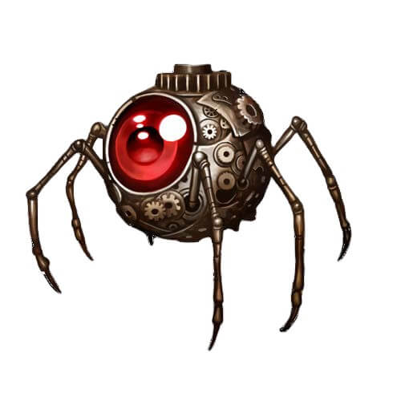

"Touch nothing but the lamp" the guardian bade before opening the path before Aladdin to the cave of wonders.
"Remember boy," the old man called out after him, "first fetch the lamp for me, and then you shall have your reward."
- Aladdin, from the Kelesh tale Quadiran Nights
Clockwork Servitors
Azlanti Replay Device
This clockwork bust of a nondescript woman has a small slot built into the forehead the same size and shape as an Azlanti Recording Gem. If a gem is slotted in the contraption's forehead, it replays the information stored within, projecting any visual information via its eyes while its mouth moves along with produced sounds.
Clockwork Spy

This captured Clockwork Spy was found observing the abandoned Talmandor's Bounty from within the otherwise-empty town hall. It appears to be self-winding with an internal key, and its purpose or mission is currently unknown.
Unique Magical Items
Xiphos
Azlanti Longsword
Inscibed with the name "Xiphos" this +1 Azlanti Longsword has an emerald crossguard wrapped in leather and gold wire and is glowing with a pale emerald light as per the spell light. Its remarkable condition suggests it is immune to the wear and rust of either water or time, while its gold wiring terminates in a bizare electro-thaumaturgic fuse.
At the height of the Azlanti Empire, the electro-thaumaturgic fuse would gather ambient energy broadcast from the city, though that method of powering this sword is no longer possible. It can, however, be imitated through magic. A caster may specifically target Xiphos with a spell as though it were a living creature to empower the sword for a number of rounds equal to their casting modifier. This grants a bonus to attack and damage rolls on the weapons next attack, whether it hits an enemy or not, equal to the level of the spell used to empower the weapon, after which the spell is expended and not delivered to the target unless the wielder is capable of delivering spellstrikes. If this attack hits multiple targets, only the first target takes the bonus damage. This bonus damage does not stack with the Arcane Strike feat.
If the wielder is capable of delivering a spellstrike with the spell used to empower Xiphos, they may hold the charge in the sword normally for up to a number of rounds equal to the casters casting modifier, even if they miss with an attack roll. A spell held in this way is still immediately discharged the first time it hits a creature, even if it normally allows for multiple touch attacks or if the wielder only uses the sword to deliver a touch spell, though the wielder may also choose to deliver the spell's effect normally via spellstrike upon contact in addition to the bonus damage.
Trophies on Display
Azlanti Timepiece
This wound and working timepiece is at the correct time despite needing to be wound every 60 days. It doubles as a compass, providing the same +2 circumstance bonus. It is possible that this timepiece is a precursor to the pathfinder societies Wayfinders.
Special Loot
Click on an item to display details.
Azlanti Headband of Bright Recollection
When touched to a creatures forehead, this block of copper breaks into 10 separate plates that begin floating around the creatures head 1" from their body. This forms a headband with a faint crimson energy field connecting the pieces until a creature pulls a piece more than 10" from their head, causing the pieces to reform into the copper block.
This headband acts as a Headband of Ponderous Recollection (arcana), which emits a crimson light in the direction the wearer is looking any time they read, write, remember something (using a check) or otherwise concentrate (swift action). This light functions like a hooded lantern, emitting normal light in a 10ft. cone in the direction the character is looking, and dim light for 5ft. around the cone. Each time the light is activated, it remains lit for a number of rounds equal to the creatures K: Arcana ranks or until they dismiss the light (free action on their turn). If the character has 10 or more ranks in K: Arcana, they may choose to instead emit a bright light any time the device is active (with normal light for 10ft. and dim light for 10ft.) with the bright light portion counting as though it was generated by a daylight spell.
This headband was specifically designed to function in conjunction with Crimson Sphere Ioun Stones, and orbiting Crimson Sphere Ioun Stones orbit within the same orbital plane. This function allows this headband to stack with them as though it were an identitical Crimson Sphere Ioun Stone, matching with the best one if multiple types are used being used simultaneously. In addition, if any Crimson Sphere Ioun Stone is orbiting within the same plane as the Headband of Bright Recollection, the headband offers a fourth piece of information when activated to reveal the abilities and weaknessess of a creature within line of sight, treating the wearer as though they rolled a natural 20 on their fourth turn.
Price: 6,100gp
Water or Surface Exploration Equipment
Rowboat - Seats up to 6 people.
Canoe - Seats up to 3 people.
Social Favors
Gaege Murani - Her motherly insight grants a +2 competence bonus on influence and discovery checks against children, youth, and small creatures.
Faedwyr Trundlebrook - He always backs the expedition team 100%, granting each PC one additional social round during colony-wide events and social crisis' he is a member in as he helps keep the crowds patient and willing to listen.
Medrinnah Harleau - Promises to not rob the party. Each week, there is a 50% chance that she 'finds something' for the PC's, usually missing evidence, investigation clues, or items belonging to a character or merchant in the colony that is unfriendly to the party. If the item is valuable, she offers to sell it to the party for 50% of its total value.
Gov. Ramona Advanth - Includes the PC's on daily colonist reports, granting a +2 bonus on all insight and discovery checks with the other colonists.
Father Eamon Caranth - Sets up a random PC on a date once per week with a chosen NPc "match". This grants a dual social round with a +2 bonus.
Lyra Heatherly - After making the expedition team a higher priority, there is a 50% chance each week that she locates an undiscovered area of interest, if one exists.